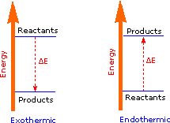
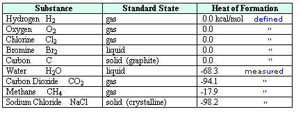
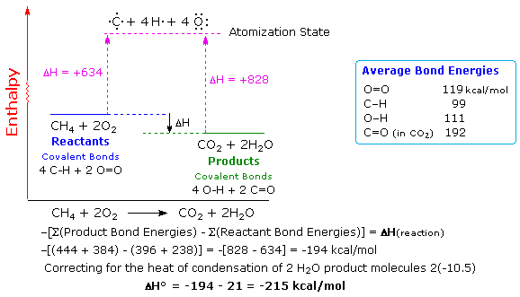
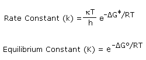

The term energy is commonly used in many contexts, but seldom in a carefully defined way. A speeding automobile has considerable kinetic energy, which is transformed into heat energy and work (the rupture of metal and plastic components) if the automobile crashes into a stone wall. The accumulated snow on a steep mountain has considerable potential energy which is transformed in an avalanche, first into kinetic energy, and then into heat and work as the avalanche engulfs forests and towns and eventually comes to a stop. In these examples the potential and kinetic energy are directed (oriented) in space, whereas the heat produced consists of random molecular motion.
Chemists are concerned with both physical and chemical change, and the energy associated with each. Chemical reactions involve the making and breaking of covalent bonds, and these transformations have energy consequences. Heat is the most common form of energy introduced into or released from chemical reactions, but light, electrical current and sound may also be involved. Also, if gases are produced in a reaction, the work done on the surroundings by volume expansion becomes part of the energy balance, and in explosive reactions may be the major consequence. Of course, reactions that consume a gas undergo an opposite volume change, and work is done on the system by the surroundings. The traditional unit of heat energy used by organic chemists is the calorie, defined as the heat needed to raise the temperature of 1 gram of water 1º C (from 14.5 to 15.5º C). Note that this calorie is not the same as the Calorie used for nutritional purposes. In 1960 a revised metric system based on seven fundamental units was established, and the resulting SI unit of energy is the joule (J). The joule is a unit derived from three fundamental units (mass, length and time), and is used to express both heat and work. Both the joule and the calorie are small, so it is common to express heats of reaction in kilocalories (kcal) or kilojoules (kJ) per mole. To interconvert calories (or kcal) and joules (or kJ) the following factors may be used:
1 cal = 4.184 J
1 J = 0.2388 cal
The covalent bond of a chlorine molecule provides a simple example of the energy changes associated with bond breaking and bond making. This bond may be broken by the introduction of heat or light energy, and it has been determined that 57.9 kcal/mol (242.3 kJ/mol) is required for bond homolysis. This is shown in the first of the following reactions; the second reaction describes the reverse bond-forming process. The energy absorbed or released in these reactions is referred to as the bond dissociation energy. If the bond dissociation energy is introduced from the surroundings in the form of heat, the transformation is said to be endothermic. If heat passes from the system to the surroundings, the transformation is termed exothermic. Using our initial terminology, we may say that the covalently bonded system has a lower potential energy than the unbonded diatomic system. Indeed, It is helpful to think of exothermic reactions as proceeding from a higher energy (less stable) reactant state to a lower energy (more stable) product state, as shown in the diagram on the right. Some basic principles of reaction energetics were discussed earlier.
Cl_Cl + heat ____> 2Cl •
An Endothermic Transformation

2Cl • ____> Cl_Cl + heat
An Exothermic Transformation
In more complex chemical reactions some (or even all) of the bonds that hold together the atoms of reactant and product molecules may be broken while other bonds are formed. Energy is required to break bonds, and since different bonds have different bond dissociation energies, there is often a significant overall energy change in the course of a reaction. In the combustion of methane, for example, all six bonds in the reactant molecules are broken, and six new bonds are formed in the product molecules (equation 1). To analyze such reactions we need to keep track of and evaluate heat changes in a precise and systematic manner.
(1) CH4 + 2 O2
CO2 + 2 H2O + heat
Reactants
Products
The science that investigates the passage of energy from one system to another, and the transformation of energy from one form to another is called thermodynamics. Classical thermodynamics is a statistical science in which observations are made on macroscopic samples. Heat energy or heat content is designated as enthalpy, symbol H. The enthalpy change in a physical or chemical transformation is written ΔH, defined as Hproducts - Hreactants. Because of this formalism, which holds for other thermodynamic functions as well, exothermic reactions have a negative ΔH, and endothermic reactions have a positive ΔH. Careful calorimetric measurements of the heat produced by the combustion of methane (equation 1 above) establish a ΔH = -212.8 kcal/mol for this reaction. In order to consolidate and make use of thermochemical data of this kind, a standard state has been defined. This is taken to be the form in which a substance is stable at 25º C and one atmosphere pressure (760 torr). For solutions the standard state is a 1M concentration. The standard states of some typical substances are listed in the following table.

Care must be taken to identify the most stable phase or form a given substance will assume under standard conditions. In the case of water this is the liquid phase, and for carbon it is graphite, not diamond. The relative enthalpy of different compounds may then be given as a heat of formation, symbol ΔHºf, as noted in the right hand column. By definition, the heat of formation of an element in its standard state is 0.0 kcal/mol. Reactions involving elements are then used to determine the ΔHºf of the compounds produced. A small degree sign to the upper right of the enthalpy symbol (e.g. Hº) designates a measurement made under standard state conditions. For examples of direct and indirect determinations of heats of formation click on the above table. The first two equations show how the heats of formation of water and carbon dioxide are measured. A second click on the diagram displays an indirect method for determining the ΔHºf of methane.
Most heats of formation are negative, reflecting the strong covalent bonds and lower enthalpy that characterizes stable compounds relative to their elements. However, some stable compounds are found to have positive heats of formation, e.g. benzene and condensed ring aromatics, making it unwise to generalize from this data alone. As we have noted, heats of reaction reflect the bond dissociation energies of bonds that are broken and formed in the reaction, but the formalism of setting elemental heats of formation to zero obscures the covalent bond dissociation energies of diatomic elements such as H2, O2, N2 and Cl2. Elements that have solid standard states (e.g. carbon) present an even more complex bond dissociation energy challenge. Fortunately, it is possible to determine the bond dissociation energy of diatomic elements and compounds with precision by non-thermodynamic methods, and together with thermodynamic data such information permits a table of average bond energies to be assembled. These bond energies or bond dissociation enthalpies are always positive, since they represent the endothermic homolysis of a covalent bond. It must be emphasized that for the common covalent bonds found in polyatomic molecules (e.g. C-H and C-C) these are average dissociation enthalpies, in contrast to specific bond dissociation enthalpies determined for individual bonds in designated compounds. Factors such as hybridization, strain and conjugation may raise or lower these numbers substantially. Common sense suggests that molecules held together by strong covalent bonds will be more stable than molecules constructed from weaker bonds. Previously we defined bond dissociation energy as the energy required to break a bond into neutral fragments (radicals or atoms). The sum of all the bond energies of a molecule can therefore be considered its atomization energy, i.e. the energy required to break the molecule completely into its component atoms. If this concept is applied to the reactants and products of a reaction, it should be clear that a common atomization state exists, and that the total bond energies of the reactants compared with the bond energies of the products determines the enthalpy change of the reaction. Thus, if the products have a greater total bond energy than the reactants the reaction will be exothermic, and the opposite is true for an endothermic reaction. The following diagram illustrates this relationship for the combustion of methane. Always remember, a bond energy is energy that must be introduced to break a bond, and is not a component of a molecule's potential energy.

Bond energies may be used for rough calculations of enthalpies of reaction. To do so the total bond energies of the reactant molecules must be subtracted from the total bond energies of the product molecules, and the resulting sign must be changed. This operation is outlined above for the combustion of methane. To compare such a calculation with an experimental standard enthalpy of reaction, correction factors for heats of condensation (or fusion) must be added to achieve standard state conditions. In the above example, gaseous water must be condensed to the liquid state, releasing 10.5 kcal/mol of heat. Once this is done, a reasonably good estimate of the standard enthalpy change is obtained.It may be helpful to note that the potential energy of a given molecular system is inversely proportional to its total bond energies. In this sense the potential energy of the methane + oxygen reactants is greater than that of the carbon dioxide + water products. In this reaction, potential energy is lost by conversion to kinetic (heat) energy.
Thermodynamic calculations and arguments focus only on the initial and final states of a system. The path by which a change takes place is not considered. Intuitively, one might expect strongly exothermic reactions to occur spontaneously, but this is usually not true. For example, the methane combustion described above does not proceed spontaneously, but requires an initiating spark or flame. Once begun, the heat produced by the combustion serves to maintain the reaction until one or both of the reactants are completely consumed. Likewise, benzene has a heat of formation of +11.7 kcal/mol, suggesting that it could decompose spontaneously to hydrogen and carbon. Yet every chemist knows that benzene is a stable liquid that can be purified by distillation at 80º C without decomposition. Clearly, many potentially favorable reactions are prohibited or retarded by substantial energy barriers to the transformation.
To understand why some reactions occur readily (almost spontaneously), whereas other reactions are slow, even to the point of being unobservable, we need to consider the intermediate stages through which reacting molecules pass on the way to products. Every reaction in which bonds are broken will necessarily have a higher energy transition state on the reaction path that must be traversed before products can form. This is true for both exothermic and endothermic reactions. In order for the reactants to reach this transition state, energy must be supplied from the surroundings and reactant molecules must orient themselves in a suitable fashion. The heat energy needed to raise the reactants to the transition state energy level is called the activation enthalpy, ΔH‡. Further treatment of this subject, and examples of reaction path profiles that illustrate transition states are provided elsewhere in this text. However, in these introductory discussions a distinction between enthalpy and "potential energy" is not made. As expected, the rate at which chemical reactions proceed is, in large part, inversely proportional to their activation enthalpies, and is dependent on the concentrations of the reactants. The study of reaction rates is called chemical kinetics.
Common use of the term stability implies an object, system or situation that is likely to remain unchanged for a significant period of time. In chemistry, however, we often refer to two kinds of stability. Thermodynamic Stability : The enthalpy or potential energy of a compound relative to a reference state. For exothermic reactions we may say that the products are thermodynamically more stable than the reactants. The opposite would be true for endothermic reactions. Chemical Stability : The resistance of a compound or mixture of compounds to chemical change (reaction). This is clearly proportional to the activation energies of all possible reactions. As noted above, benzene is thermodynamically unstable compared with elemental carbon and hydrogen, but it is chemically stable under normal laboratory conditions, even when mixed with some reactive compounds such as bromine. Compounds or mixtures that are chemically unstable are often called labile.
When the rates of reactions and equilibria between reactants and products are carefully examined, it becomes apparent that overall enthalpy changes and enthalpy of activation barriers are not by themselves sufficient to explain the observations. A modified energy function, called free energy, is needed. This thermodynamic function is described in the next two sections.
Enthalpy is not the only thermodynamic function that influences the overall energy changes, rates and equilibria of chemical and physical transformations. Two examples will serve to demonstrate this fact. First, nitrogen pentaoxide is an unstable solid that undergoes a spontaneous and endothermic decomposition to nitrogen dioxide and oxygen, as shown below. Clearly, some factor other than a change in enthalpy must act to favor this decomposition.
N2O5 (solid)
2 NO 2 (gas) + 1/2 O2 (gas)
ΔHº = +26.2 kcal/mol
Second, the melting of solids (e.g. ice) and the vaporization of liquids (e.g. water) are endothermic processes. Since intermolecular attractions favor the liquefaction of gases and the solidification of liquids by lowering the enthalpy of the condensed phase, our world would be a frozen lump of solid matter were enthalpy the only controlling factor.
What do these two cases have in common that could account for their behavior? In the first example two well-defined molecules in the solid state break apart into five discrete product molecules, all of them in the gaseous state. The second example likewise describes a progression from a highly ordered array of molecules in the solid state to a less ordered assemblage as a liquid, and finally to a nearly random disordered gaseous state. This disposition, favoring disorder, seems to be universal, as evidenced by the failure of a shuffled deck of cards to arrange itself into ordered suits. The thermodynamic name for this tendency toward randomness or disorder is entropy, symbol S. Entropy increases spontaneously, since greater randomness or disorder in a system has a higher statistical probability. Returning to the deck of cards example, the number of different ways 52 cards may be arranged is very large (52!), and only a tiny fraction of these would be ordered in any discernible manner. A disordered state is therefore more probable than an ordered one. Since the disorder created by molecular motion increases with temperature, the units of entropy, eu, are calories per degree Kelvin per mole. Only differences in entropy have significance, so the standard state entropy of a substance is the difference between its entropy at 298º K (25º C) and its entropy at absolute zero (defined as 0 by the third law of thermodynamics). The standard state entropies of some elements and compounds are given in the following table. Two obvious trends to note are that gases have higher entropies than liquids or solids of the same size, and molecules composed of many atoms have higher entropies than diatomic or triatomic molecules.
Gases
Liquids
Solids
The entropy change in a physical or chemical transformation is written ΔS, and defined as Sproducts - Sreactants. This is the same notation used to represent an enthalpy change, and the sign of ΔS indicates a similar directional change. Thus, a positive ΔS denotes an increase in entropy on going from reactants to products, while a negative sign is associated with a decrease in entropy.
It should be noted that a given sign for ΔSº carries a different interpretation than it does for ΔHº. Accordingly, a negative ΔHº is associated with an exothermic and energetically favorable transformation; but a negative ΔSº indicates an increase in system order (a less random system), and this is entropically unfavorable. Depending on the case to which they apply, these two functions may complement (support) each other or act in opposition. In careful studies of rates and equilibria the consequence of this relationship must be calculated. Because entropy increases proportionally with the randomness or statistical probability of a state, it is useful to identify and describe some common chemical transformations that result in significant changes in entropy (|ΔSº| is relatively large). Examples of these will be found at the end of this chapter.
1. For a given number of total atoms, a process that converts a few large molecules to many smaller molecules proceeds with a significant increase in entropy (ΔSº is +). 2. If the total number of molecules remains unchanged, a process that converts a single molecular species to a mixture of different molecules proceeds with a significant increase in entropy (ΔSº is +). 3. In general, a change from a condensed phase (solid or liquid) to a gaseous state will proceed with a significant increase in entropy (ΔSº is +). 4. Ionization reactions in solution are complicated by solvation effects. The expected increase in entropy from the first factor listed above may be offset by solvent molecule orientation about the ions. This ordering of solvent molecules causes a decrease in ΔSº.
The description of entropy given above reflects a traditional or classic view, which is presently undergoing a significant revision. This revision focuses on changes in the microscopic distribution of energy among a large number of translational, rotational and vibrational quantum states. Instead of the macroscopic concept of order versus disorder, attention is focused on the concentration or dispersal of energy in molecular systems. Two fundamental tenets are that energy spontaneously disperses if not hindered from doing so (e.g. by activation energy barriers), and that a change in entropy is a measure of molecular motional energy that has been dispersed (or concentrated) in a system (as a function of absolute temperature). To gain a better understanding of this new description the reader is encouraged to visit the entropy web-site, authored by Professor Frank Lambert.
The interaction between enthalpy and entropy changes in chemical reactions is best observed by studying their influence on the equilibrium constants of reversible reactions. To this end a new thermodynamic function called Free Energy (or Gibbs Free Energy), symbol ΔG, is defined as shown in the first equation below. Two things should be apparent from this equation. First, in cases where the entropy change is small, ΔG ≅ ΔH. Second, the importance of ΔS in determining ΔG increases with increasing temperature.
ΔGº = ΔHº – TΔSº
The free energy function provides improved insight into the thermodynamic driving forces that influence reactions. A negative ΔGº is characteristic of an exergonic reaction, one which is thermodynamically favorable and often spontaneous, as is the melting of ice at 1 ºC. Likewise a positive ΔGº is characteristic of an endergonic reaction, one which requires an input of energy from the surroundings. For an example of the relationship of free energy to enthalpy consider the decomposition of cyclobutane to ethene, shown in the following equation. The standard state for all the compounds is gaseous.
This reaction is endothermic, but the increase in number of molecules from one (reactants) to two (products) results in a large positive ΔSº. At 25 ºC (298 ºK), ΔGº = 19 kcal/mol – 298(43.6) cal/mole = 19 – 13 kcal/mole = +6 kcal/mole. Thus, the entropy change opposes the enthalpy change, but is not sufficient to change the sign of the resulting free energy change, which is endergonic. Indeed, cyclobutane is perfectly stable when kept at room temperature. Because the entropy contribution increases with temperature, this energetically unfavorable transformation can be made favorable by raising the temperature. At 200 ºC (473 ºK), ΔGº = 19 kcal/mol – 473(43.6) cal/mole = 19 – 20.6 kcal/mole = –1.6 kcal/mole. This is now an exergonic reaction, and the thermal cracking of cyclobutane to ethene is known to occur at higher temperatures.
ΔGº = –RT lnK = –2.303RT logK
R = 1.987 cal/ ºK mole T = temperature in ºK K = equilibrium constant
A second equation, shown above, is important because it demonstrates the fundamental relationship of ΔGº to the equilibrium constant, K. Because of the negative logarithmic relationship between these variables, a negative ΔGº generates a K>1, whereas a positive ΔGº generates a K<1. When ΔGº = 0, K = 1. Furthermore, small changes in ΔGº produce large changes in K. A change of 1.4 kcal/mole in ΔGº changes K by approximately a factor of 10. This interrelationship may be explored with the calculator on the right. Entering free energies outside the range -8 to 8 kcal/mole or equilibrium constants outside the range 10-6 to 900,000 will trigger an alert, indicating the large imbalance such numbers imply.
Equilibrium Constant. ΔGº (kcal / mol, 25 ºC).
Enter a value in the appropriate box and press "Calculate".
Although spontaneous transformations all have negative ΔGº s, not all exergonic processes are spontaneous, due to activation energy barriers to reaction. Our previous treatment of activation energy was framed in terms of enthalpy or potential energy. It should now be clear that, if entropy factors are to be incorporated in the activation barrier, we should be thinking about Free Energy of Activation, ΔG‡ . The defining equation then becomes:

Transition state theory proposes an equilibrium between reactants and the transition state, so each of the functions in this equation may be viewed as a [FTransition State – FReactants] difference, where F represents H, S or G. The equations on the right demonstrate the similar exponential relationship of ΔGº to Keq and ΔG‡ to k. Since the rate constant equation incorporates the temperature variable twice, and ΔG‡ also changes with temperature, observed reaction rates are clearly temperature dependent. Organic chemists make general use of this relationship in two ways. First, it is a rule-of-thumb that a 10º C increase in reaction temperature will roughly double the rate of that reaction. Second, since this rule applies as well to accompanying reactions, the rates of such side reactions also increase with temperature, sometimes more than the desired reaction. Consequently, the practical yield of the desired product may actually decrease at higher temperatures. Thus, a cleaner (less contaminated) product is often obtained be running a reaction at the lowest effective temperature that gives the desired product. Because ΔG‡ incorporates a temperature dependent entropy factor and is related exponentially to the rate constant, k, reaction rate studies at different temperatures may be interpreted to provide the activation parameters. Consider, for example, the exergonic substitution reactions that take place when a 1º-alkyl bromide reacts with sodium thiophenylate, as shown in the following equation. Careful rate studies made at 20º C in methanol solution gave the rate constants, k, reported in the second column of the table below. Enthalpy and entropy of activation values were obtained by measurements at different temperatures, and are given in the third and fourth columns of the table.
R-CH2-Br + C6H5S(–) Na(+)
R-CH2-SC6H5 + Na(+) Br(–)
R-
k( l/mole sec * 104 )
ΔH‡ kcal/mole
ΔS‡cal/deg mole
From this data we can deduce several characteristics of the transition states through which these simple SN2 reactions must pass. To begin with, the negative ΔS‡ indicates a transition state that is more highly ordered than the reactants. This agrees with contemporary views of the SN2 transition state, in that two independent reactant molecules have combined to form a single transition complex. Second, the greater reactivity of methyl bromide over ethyl bromide is largely due to an increase in ΔH‡, presumably due to steric hindrance to nucleophile approach from the opposite side of carbon #1. Finally, the decrease in reaction rates of 1-propyl and 1-butyl bromides compared with ethyl bromide, while less pronounced and nearly the same in each case, is due primarily to an increasingly negative ΔS‡ . It has been proposed that this comes from a restriction of conformational mobility about the C2-C3 bond of the alkyl group in the transition state. Of three possible staggered conformations, on average one will interfere significantly with nucleophile approach, resulting in a one third lower probability for achieving the transition complex. In this respect it should be noted that entropy has been related to the statistical probability of a system, W (the number of equivalent way molecules can be arranged) by the expression: S = κ*lnW (κ is the Boltzman constant = R/Avogadro's Number)
Some applications of the concepts and principles presented here to specific chemical systems are presented in the topics accessed from the following menu.